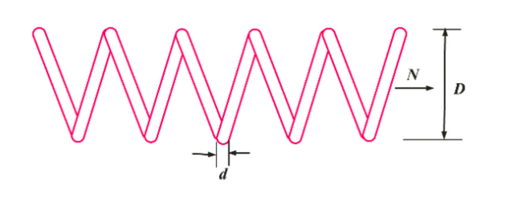
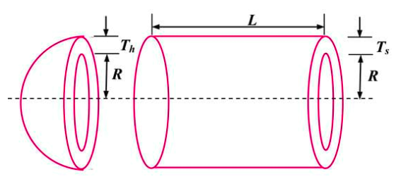
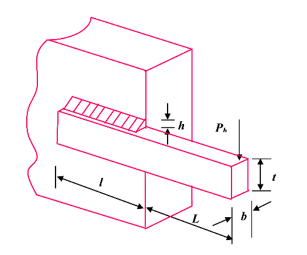
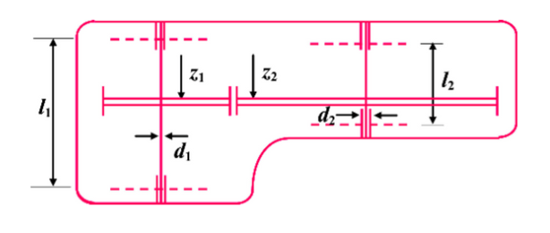
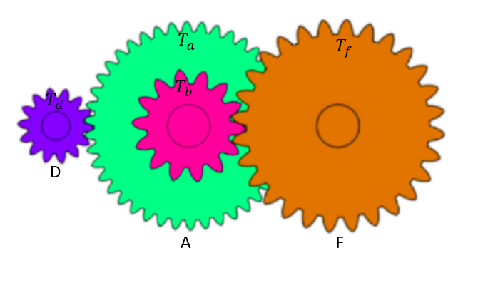
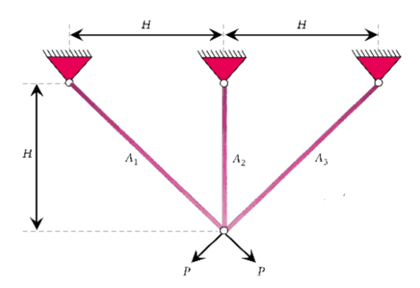
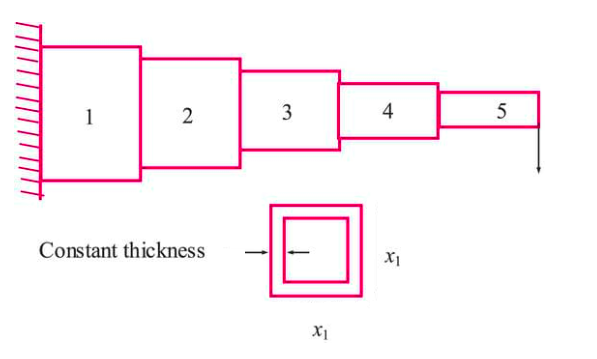
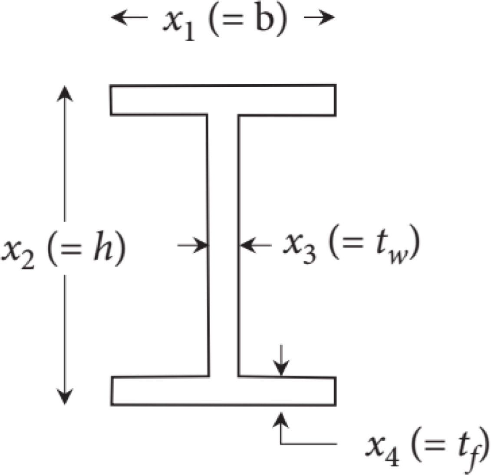

Engineering Problems
MetaheuristicsAlgorithms.Engineering_F1 — FunctionF1(x::Vector{Float64}) -> Float64Tension/Compression Spring Design Optimization.
Minimizes the weight of a tension/compression spring subject to constraints on shear stress, surge frequency, minimum deflection, and geometric limits.
Problem Source
A well-known benchmark in constrained engineering design, commonly used in metaheuristic optimization literature.
Variables
x[1]: Wire diameter (d)x[2]: Mean coil diameter (D)x[3]: Number of active coils (N)
Constraints
Four nonlinear inequality constraints:
- Shear stress constraint
- Surge frequency constraint
- Minimum deflection constraint
- Geometry-related limits
Returns
- Penalized objective function value (Float64)

MetaheuristicsAlgorithms.Engineering_F2 — FunctionF2(x::Vector{Float64}) -> Float64Pressure Vessel Design Optimization.
Minimizes the total cost of a cylindrical pressure vessel, which includes material, forming, and welding costs, subject to constraints on thickness, volume, and stress.
Problem Source
A classical benchmark problem in constrained engineering design, widely used in metaheuristic algorithm evaluations.
Variables
x[1]: Thickness of the shell (Ts)x[2]: Thickness of the head (Th)x[3]: Inner radius (R)x[4]: Length of the cylindrical section without head (L)
Constraints
Four nonlinear inequality constraints:
- Stress constraints on thickness
- Volume constraint
- Geometrical bounds
Returns
- Penalized objective function value (Float64)

MetaheuristicsAlgorithms.Engineering_F3 — FunctionEngineering_F3(x::Vector{Float64}) -> Float64Welded Beam Design Optimization Problem.
Minimizes the cost of a welded beam subject to constraints on shear stress, normal stress, deflection, and geometric properties.
Objective
\[\vec{z} = [z_1, z_2, z_3, z_4] = [h, l, t, b] \\ min_{\vec{z}} f(\vec{z}) = 1.10471 z_1^2 z_2 + 0.04811 z_3 z_4 (14 + z_2)\]
Constraints
\[\begin{aligned} g_1(\vec{z}) &= \tau(z) - \tau_{\max} \leq 0 \\ g_2(\vec{z}) &= \sigma(z) - \sigma_{\max} \leq 0 \\ g_3(\vec{z}) &= z_1 - z_4 \leq 0 \\ g_4(\vec{z}) &= 0.10471 z_1^2 + 0.04811 z_3 z_4 (14 + z_2) - 5 \leq 0 \\ g_5(\vec{z}) &= 0.125 - z_1 \leq 0 \\ g_6(\vec{z}) &= \delta(z) - \delta_{\max} \leq 0 \\ g_7(\vec{z}) &= P - P_c(z) \leq 0 \end{aligned}\]
Definitions
\[\tau(z) = \sqrt{(\tau')^2 + 2\tau'\tau''\frac{z_2}{2R} + (\tau'')^2},\quad \tau' = \frac{P}{\sqrt{2} z_1 z_2},\quad \tau'' = \frac{MR}{J}\]
\[M = P \left( L + \frac{z_2}{2} \right),\quad R = \sqrt{ \frac{z_2^2}{4} + \left( \frac{z_1 + z_3}{2} \right)^2 }\]
\[J = 2 \sqrt{2} z_1 z_2 \left[ \frac{z_2^2}{12} + \left( \frac{z_1 + z_3}{2} \right)^2 \right]\]
\[\sigma(z) = \frac{6PL}{z_4 z_3^2},\quad \delta(z) = \frac{4PL^3}{E z_3^3 z_4}\]
\[P_c(z) = \frac{4.013 E \sqrt{z_3^2 z_4^5 / 36}}{L^2} \left( 1 - \frac{z_3}{2L} \sqrt{\frac{E}{4G}} \right)\]
Constants
P = 6000lbL = 14inE = 30×10⁶psiG = 12×10⁶psiτₘₐₓ = 13600psiσₘₐₓ = 30000psiδₘₐₓ = 0.25in
Decision Variables
x[1] = z₁: Thickness of weld (h)x[2] = z₂: Length of weld (l)x[3] = z₃: Height of beam (t)x[4] = z₄: Width of beam (b)
Returns
- Penalized objective function value (
Float64)

MetaheuristicsAlgorithms.Engineering_F4 — FunctionF4(x::Vector{Float64}) -> Float64Speed Reducer Design Optimization.
Minimizes the weight of a speed reducer subject to constraints on bending stress, surface stress, transverse deflections, and geometry.
Problem Source
A standard benchmark problem in engineering design, commonly used to test constrained optimization algorithms.
Variables
x[1]: Face width (in)x[2]: Module of teeth (in)x[3]: Number of teethx[4]: Length of the first shaft between bearings (in)x[5]: Length of the second shaft between bearings (in)x[6]: Diameter of the first shaft (in)x[7]: Diameter of the second shaft (in)
Constraints
- Bending stress
- Surface stress
- Deflection of shafts
- Geometric and design constraints
- Seven nonlinear inequality constraints in total
Returns
- Penalized objective function value (Float64)

MetaheuristicsAlgorithms.Engineering_F5 — FunctionF5(x::Vector{Float64}) -> Float64Gear Train Design Optimization.
Minimizes the error between an actual and a desired gear ratio in a simple four-gear train. All variables must be integers.
Problem Source
A discrete constrained engineering design problem widely used to evaluate optimization algorithms that handle integer variables.
Variables
x[1]: Number of teeth on gear 1 (integer)x[2]: Number of teeth on gear 2 (integer)x[3]: Number of teeth on gear 3 (integer)x[4]: Number of teeth on gear 4 (integer)
Constraints
- Each variable must be an integer in the range [12, 60]
- The gear ratio error must be minimized
Returns
- Squared error between actual and desired gear ratio (Float64)

MetaheuristicsAlgorithms.Engineering_F6 — FunctionF6(x::Vector{Float64}) -> Float64Three-Bar Truss Design Optimization.
Minimizes the weight of a three-bar truss structure subject to stress and displacement constraints.
Problem Source
A classical structural optimization benchmark problem used in metaheuristic algorithm research.
Variables
x[1]: Cross-sectional area of the first bar (continuous)x[2]: Cross-sectional area of the second bar (continuous)
Constraints
- Stress in each member must not exceed allowable limits
- Displacement constraints on the structure
- Variable bounds typically in the range [0.1, 10]
Returns
- Penalized objective function value (Float64) representing the weight of the truss

MetaheuristicsAlgorithms.Engineering_F7 — FunctionF7(x::Vector{Float64}) -> Float64Rolling Element Bearing Design Optimization.
Minimizes the bearing’s weight subject to constraints on stress, deflection, and geometry.
Problem Source
A standard constrained engineering design problem often used to benchmark metaheuristic algorithms.
Variables
x[1]: Bearing inner radiusx[2]: Bearing outer radiusx[3]: Width of the bearingx[4]: Shaft diameterx[5]: Number of rolling elements
Constraints
- Stress limits on the bearing components
- Deflection limits
- Geometric and manufacturing constraints
Returns
- Penalized objective function value (Float64) reflecting the bearing weight or cost
MetaheuristicsAlgorithms.Engineering_F8 — FunctionF8(x::Vector{Float64}) -> Float64Cantilever Beam Design Optimization.
Minimizes the weight of a cantilever beam subject to constraints on bending stress, deflection, and geometric dimensions.
Problem Source
A classical constrained engineering design problem used in metaheuristic algorithm research.
Variables
x[1]: Width of the beam cross-sectionx[2]: Height of the beam cross-sectionx[3]: Length of the beam segment 1x[4]: Length of the beam segment 2x[5]: Length of the beam segment 3x[6]: Length of the beam segment 4
Constraints
- Maximum bending stress constraints
- Deflection limits at the beam’s free end
- Geometric bounds on variables
Returns
- Penalized objective function value (Float64), representing the beam weight

MetaheuristicsAlgorithms.Engineering_F9 — FunctionF9(x::Vector{Float64}) -> Float64I-Beam Deflection Optimization.
Minimizes the weight of an I-beam subject to constraints on bending stress, shear stress, and deflection under load.
Problem Source
A classical engineering design benchmark widely used in metaheuristic algorithm literature.
Variables
x[1]: Web heightx[2]: Flange widthx[3]: Web thicknessx[4]: Flange thickness
Constraints
- Bending stress limits
- Shear stress limits
- Maximum deflection allowed
- Geometric constraints
Returns
- Penalized objective function value (Float64), representing the beam weight
